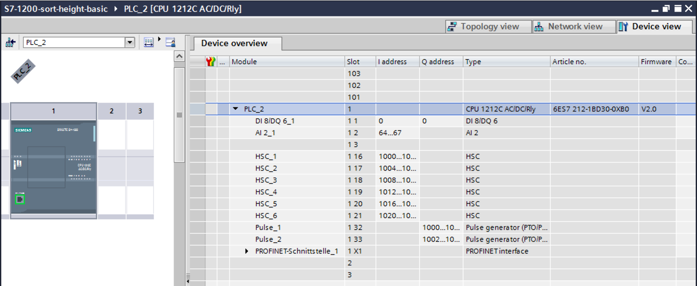
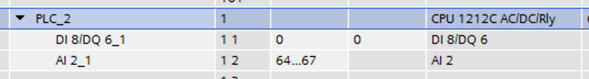
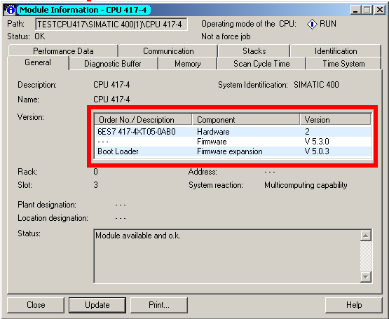

S7 (Step7)
The S7 driver talks to Siemens Simatic S7 controllers over the S7comm protocol carried on ISO-on-TCP (COTP). It exploits the advanced features of the S7-300 and S7-400 families - device status (RUN/STOP) events, system/user diagnostic events, alarms, cyclic (CYC) push subscriptions and SZL/SSL diagnostics - and provides basic PUT/GET read and write access to the S7-1200 and S7-1500 families, whose firmware does not expose the same event and diagnostics services. S7-200 and S7-200 Smart controllers are reachable too, through a small set of connection and addressing conventions documented below. The driver is also reported to work against VIPA hardware, a Siemens-compatible clone of the S7-300 with extended memory.
Most closed-source S7 stacks, and even the best-known open source one, Snap7, are built around a simple request/response pattern. PLC4X’s S7 driver goes further by giving open, non-Siemens applications access to the asynchronous, timestamped data that would otherwise require the Siemens ecosystem itself - SOFTNET OPC-DA/OPC-UA, the low-level SAPI-S7 library, or a DCS/SCADA product such as PCS7, Braumat or WinCC.
The current stable release of the driver is 0.10.0 (2022-10-04). Community support is available on the PLC4X development list (dev@plc4x.apache.org); companies offering commercial support for PLC4X drivers are listed on the project website.
Supported Operations
| Name | Value | Description |
|---|---|---|
|
C, Go and Java. |
|
|
C, Go and Java. |
|
|
Go and Java. Two independent flavors: cyclic ( |
|
|
Go and Java, under the same UserData-service condition as |
|
|
Java only, and only when the optional |
Connection String
The connection string has the layout
s7://{ip-address}?{options}
SCHEMA is always s7; cotp is the only transport and is therefore omitted. The ip
address names the PLC or the CP that fronts it, and options is an ampersand-separated list
of key/value parameters, documented in full below.
s7://10.10.1.33?cotp.remote-rack=0&cotp.remote-slot=3&controller-type=S7_400
When connecting to a Siemens LOGO device, add ?controller-type=LOGO to the
connection string. Siemens seems to have only partially implemented the protocol on these
devices: without pinning the type, the device terminates the connection as soon as the driver
tries to read the SZL table it normally uses to auto-detect which S7 device family it is
talking to.
|
Connection String Options
Name |
Type |
Default Value |
Required |
Description |
Name |
Siemens S7 (Basic) |
|||
Code |
|
|||
Maven Dependency |
<dependency> <groupId>org.apache.plc4x</groupId> <artifactId>plc4j-driver-s7</artifactId> <version>1.0.0</version> </dependency> |
|||
Default Transport |
|
|||
Supported Transports |
|
|||
Config options: |
||||
|
INT |
1024 |
Maximum size of an S7 data-packet sent to and received from the remote PLC. |
|
|
INT |
8 |
Maximum number of unconfirmed requests the PLC will accept in parallel. |
|
|
INT |
8 |
Maximum number of unconfirmed responses or requests PLC4X will accept in parallel. |
|
|
STRING |
ANY |
Skip controller-type detection and assume the given type. |
|
|
INT |
10000 |
Maximum waiting time (in milliseconds) for a single S7 request/response exchange. |
|
|
INT |
4000 |
S7H dual-path only: interval between heartbeat ticks (in milliseconds). Each tick pings each inner connection so a standby disruption is detected within interval + ha-failover-timeout-ms. Lower values detect faster but generate more background traffic. Default 4000 (4s). |
|
|
INT |
2000 |
S7H dual-path only: maximum time (in milliseconds) the wrapper waits for an operation on the active inner before swapping to the alternate. The same value is used as the per-tick ping timeout in the heartbeat. Lower values fail over faster but risk swapping on transient slow responses. Default 2000 (2s). |
|
Transport config options: |
||||
cotp |
||||
|
INT |
1 |
Rack value for the client (PLC4X device). |
|
|
INT |
1 |
Slot value for the client (PLC4X device). |
|
|
STRING |
OTHERS |
Local Device Group. |
|
|
INT |
0 |
Rack value for the remote main CPU (PLC). |
|
|
INT |
0 |
Slot value for the remote main CPU (PLC). |
|
|
STRING |
PG_OR_PC |
Remote Device Group. |
|
|
INT |
0 |
Local TSAP (Transport Service Access Point) identifier. |
|
|
INT |
0 |
Remote TSAP (Transport Service Access Point) identifier. |
|
|
INT |
8192 |
COTP PDU size for data transmission. Valid values: 128, 256, 512, 1024, 2048, 4096, 8192. |
|
|
INT |
5000 |
Connection timeout for COTP handshake in milliseconds. |
|
|
INT |
0 |
COTP protocol class to use. Class 0 is most commonly used (simple class, no flow control). |
|
|
INT |
5000 |
Connection timeout in milliseconds. |
|
|
INT |
0 |
Socket read timeout in milliseconds. 0 means no timeout. |
|
|
INT |
0 |
Socket write timeout in milliseconds. 0 means no timeout. |
|
|
BOOLEAN |
true |
Enable TCP_NODELAY (disable Nagle’s algorithm). |
|
|
BOOLEAN |
false |
Enable SO_KEEPALIVE. |
|
|
INT |
81920 |
Send buffer size in bytes. 0 uses system default. |
|
|
INT |
81920 |
Receive buffer size in bytes. 0 uses system default. |
|
|
STRING |
Local address to bind to (optional). If not set, uses default. |
||
|
INT |
0 |
Local port to bind to (optional). 0 uses ephemeral port. |
|
Tag Addresses
Addressing is implemented in C, Go and Java. See the protocol support matrix for what each implementation does.
General Format
The PLC4X S7 driver addresses TIA Portal’s own address notation, so addresses can generally be copied directly out of TIA Portal.
In general all S7 addresses have this format:
%{Memory-Area}{start-address}[{selection}]:{Data-Type}
If the selection is omitted, a single element is read. The selection in brackets is the shared array notation - a single index, an inclusive range, and optionally the array’s declared lower bound. See Addressing arrays for the full set of forms and what this driver can express.
Generally there are two types of addresses:
Bit-Addresses {Memory-Area-Code}{Start-Byte-Address}.{Bit-Offset}:BOOL[{Count}]
Byte-Addresses {Memory-Area-Code}{Start-Byte-Address}:{Data-Type-Code}[{count}]
Bit addresses are only used if the datatype BOOL is used. The array notation of these can
be omitted, in which case a Count of 1 is used by default. Start-Byte-Address and
Bit-Offset both represent unsigned integer values.
In case of accessing data in the data block memory area, the syntax is a bit more complex:
DB{Data-Block-Number}.DB{Short-Data-Type-Code}{Start-Byte-Address}.{Bit-Offset}:BOOL[{Count}]
DB{Data-Block-Number}.DB{Short-Data-Type-Code}{Start-Byte-Address}:{Data-Type-Code}[{Count}]
When reading a STRING datatype, currently 254 characters are automatically fetched from the
PLC. To limit the amount of data transferred, the STRING type declaration syntax was
extended to allow declaring a shorter length:
DB{Data-Block-Number}.DB{Short-Data-Type-Code}{Start-Byte-Address}:STRING({string-length})[{Count}]
The data-block forms above carry some unnecessary boilerplate (the .DB in the middle, as
well as the Short-Data-Type-Code), so a shorter syntax is also accepted, and handled
identically to the long form:
DB{Data-Block-Number}:{Start-Byte-Address}.{Bit-Offset}:BOOL[{Count}]
DB{Data-Block-Number}:{Start-Byte-Address}:{Data-Type-Code}[{Count}]
DB{Data-Block-Number}:{Start-Byte-Address}:STRING({string-length})[{Count}]
Memory Areas
The S7 driver currently allows access to the following memory areas.
The Code column represents the code that is used in above general address syntax:
Not all S7 device types support the same full set of memory areas, so the last column gives more information on which types a given memory area is supported on.
| Code | Name | Description | Supported PLC Types |
|---|---|---|---|
C |
COUNTERS |
TODO: Document this |
TODO: Document this |
T |
TIMERS |
TODO: Document this |
TODO: Document this |
D |
DIRECT_PERIPHERAL_ACCESS |
TODO: Document this |
TODO: Document this |
I |
INPUTS |
Inputs (Digital and Analog … usually Analog Inputs just have a start-address offset to separate them from the digital ones) |
All |
Q |
OUTPUTS |
Outputs (Digital and Analog … usually Analog Outputs just have a start-address offset to separate them from the digital ones) |
All |
M |
FLAGS_MARKERS |
TODO: Document this |
TODO: Document this |
DB |
DATA_BLOCKS |
Memory areas containing user-defined data structures usually accessed by the integer data block number. Please note that data block addresses have a little more complex address format. |
All |
DBI |
INSTANCE_DATA_BLOCKS |
TODO: Document this |
TODO: Document this |
LD |
LOCAL_DATA |
TODO: Document this |
TODO: Document this |
Data Types
| Code | Short-Code | Name | Description | Size in bits | Supported PLC Types |
|---|---|---|---|---|---|
Bit-Strings (Will all interpreted as sequence of boolean values in PLC4X) |
|||||
BOOL |
X |
Bit |
Single boolean value |
1 |
All |
BYTE |
B |
Byte |
Array of 8 boolean values |
1 |
All |
WORD |
W |
Word |
Array of 16 boolean values |
2 |
All |
DWORD |
D |
Double-Word |
Array of 32 boolean values |
4 |
All |
LWORD |
X |
Long-Word |
Array of 64 boolean values |
8 |
S7_1500 |
Integer values |
|||||
SINT |
B |
Small int |
8 bit integer (signed) |
1 |
S7_1200, S7_1500 |
USINT |
B |
Small unsigned int |
8 bit integer (unsigned) |
1 |
S7_1200, S7_1500 |
INT |
W |
Integer |
16 bit integer (signed) |
2 |
All |
UINT |
W |
Unsigned integer |
16 bit integer (unsigned) |
2 |
S7_1200, S7_1500 |
DINT |
D |
Double integer |
32 bit integer (signed) |
4 |
All |
UDINT |
D |
Unsigned Double Integer |
32 bit integer (unsigned) |
4 |
S7_1200, S7_1500 |
LINT |
X |
Long integer |
64 bit integer (signed) |
8 |
S7_1500 |
ULINT |
X |
Unsigned long integer |
64 bit integer (unsigned) |
8 |
S7_1500 |
Floating point values |
|||||
REAL |
D |
Real |
32 bit IEEE 754 full precision floating point value (signed) |
4 |
All |
LREAL |
X |
Long Real |
64 bit IEEE 754 double precision floating point value (signed) |
8 |
S7_1200, S7_1500 |
Character values |
|||||
CHAR |
B |
Character |
8 bit character |
1 |
All |
WCHAR |
X |
Double byte character |
16 bit character value |
2 |
S7_1200, S7_1500 |
STRING |
X |
String |
String 2 + n bytes |
1 |
All |
WSTRING |
X |
Double byte String |
String of 16 bit characters 2 + n bytes |
1 |
S7_1200, S7_1500 |
Temporal values |
|||||
S5TIME |
X |
S5 Time |
S5 Time (like in duration) |
2 |
S7_300, S7_400, S7_1500 |
TIME |
X |
Time |
Time (like in duration) (Minutes, Seconds, Milliseconds) |
4 |
All |
LTIME |
X |
Long Time |
Long Time (like in duration) (Minutes, Seconds, Milliseconds, Microseconds, Nanoseconds) |
8 |
S7_1500 |
DATE |
X |
Date |
Date |
2 |
All |
TIME_OF_DAY |
X |
Time of day |
Time (like in 4:40PM) |
4 |
All |
DATE_AND_TIME |
X |
Date and Time |
Date and time (like in 03.05.2020 4:40 PM) |
8 |
S7_300, S7_400, S7_1500 |
Examples
| Address | Meaning |
|---|---|
|
the single bit at data block 1, byte 0, bit 0 |
|
a 16-bit signed integer at data block 10, byte 20 |
|
the single bit at input byte 0, bit 0 |
|
a 32-bit signed integer at flag/marker byte 100 |
|
10 bytes starting at data block 1, byte 0, returned as a list |
|
a 16-bit signed integer at data block 5, byte 10, using the shorter data-block syntax |
|
16 raw bytes starting at data block 1, byte 0, decoded as |
|
an |
|
a |
|
subscribes to the live alarm push feed (see Protocol Details) |
|
one-shot read of the alarms currently buffered on the PLC, |
Notes and Tips
Especially when it comes to the input- and output addresses for analog channels, the start
addresses are configurable and hereby don’t always start at the same address.
In order to find out what addresses these ports have, please go to the device setting of
your PLC in TIA Portal.

Especially pay attention to this part:

In above image you can see that this device has 8 digital inputs (DI 8) and 2 analog inputs
(AI 2_1) as well as 6 digital outputs (DQ 6).
The start addresses of the digital inputs and outputs start directly at 0. The analog
inputs however start at address 64.
Each digital input and output can be addressed by a single bit-address (start-address and offset) or can be read in a block by reading a full byte starting at the given start address without providing a bit offset.
Protocol Details
Siemens S7-200 / S7-200 Smart
The S7-200 and the newer S7-200 Smart are lower-end controllers that behave a little differently from the S7-300/400/1200/1500 family. They can still be reached with the S7 driver over Ethernet (ISO-on-TCP), but they need a couple of specific connection settings and use a different convention for addressing their variable memory.
This section collects what the community has found to work (see PLC4X issues #1925 and #2641).
Connecting
Two things are important when connecting to an S7-200 (Smart):
-
Disable the automatic controller-type detection by passing
controller-type=S7_200. The S7-200 does not answer the SZL/SSL identification request the driver normally uses to auto-detect the CPU family, so — as with theLOGOdevice mentioned above — the type has to be provided explicitly. -
Provide the TSAP (Transport Service Access Point) values explicitly. The S7-200 (Smart) expects both the local and the remote TSAP to be
0x0200, which is512in decimal. Set them withcotp.local-tsap=512andcotp.remote-tsap=512; a non-zero TSAP overrides the rack/slot based addressing.
A minimal, working connection string therefore looks like this:
s7://192.168.12.100?cotp.local-tsap=512&cotp.remote-tsap=512&controller-type=S7_200
cotp.remote-rack=0 and cotp.remote-slot=0 are the defaults, so they are optional, but may be added for clarity:
s7://192.168.12.100?cotp.remote-rack=0&cotp.remote-slot=0&cotp.local-tsap=512&cotp.remote-tsap=512&controller-type=S7_200
Both reading and writing have been confirmed to work against an S7-200 Smart with this configuration.
Addressing the V (variable) memory area
The S7-200 keeps its user variables in a V (variable) memory area, addressed in the Siemens tooling (STEP 7-Micro/WIN) as, for example, VW310, VD732 or V350.0. The S7 driver does not have a dedicated V memory-area code.
On the S7-200, however, the V area is simply an alias for Data Block 1 (DB1). Any V address can therefore be read and written by addressing DB1 instead, using the normal data-block syntax described above:
| S7-200 notation | PLC4X address | Meaning |
|---|---|---|
|
|
single byte at V100 |
|
|
16-bit word at V310 |
|
|
32-bit double word at V732 |
|
|
single bit V350.0 |
The shorter data-block notation works as well, for example %DB1:732:UDINT for VD732.
The M (flags/markers) memory area is addressed as usual, for example %M10.0:BOOL or %MW20:INT.
Native support for a dedicated V memory-area code may be added in a future release. Until then, please use the DB1 alias shown above.
|
Actors participating in the communication process
PLC programming in general is a Pandora’s box!
Here we will assume that you use standard technological functions/libraries within your development cycle, therefore, at this point it is important to point out the actors that participate in this dialogue between the driver and the PLC and how they affect the communication cycle.
The different actors involved in communication are shown in image 1.
-
PLC (AS), the controller.ASis the reference used in PCS7. -
App, your application. -
PLC4X, implementation of the S7 driver. -
OS, PLC operating system. -
PCS7, represents the technological functions used in the PLC. PCS7 are Siemens DCS libraries. -
S7App, your application that runs on the PLC. -
CP, the communications CP will depend on your architecture and requirements, for an S7-300 it will be a CP 343-1 or a CP 443-1 for an S7-400.
S7 Event Subscription
onSubscribe accepts exactly two kinds of tag: an S7AlarmTag (ALM, QUERY:ALARM_S
or QUERY:ALARM_8) subscribed as an EVENT, or an ordinary S7Tag subscribed as
CYCLIC; anything else is rejected with INVALID_ADDRESS. The MODE, SYS and USR
subscriptions this section once documented were built on an addEventField() /
S7ModeEvent / S7SysEvent / S7UserEvent API that is no longer present in the source
tree; those subsections have been commented out in this page’s source rather than deleted.
ALM and cyclic (CYC) subscriptions are what actually works today.
|
The S7 driver allows the subscription to asynchronous events generated in the PLC.
This type of event is generated by S7-300, S7-400, G120C-PN, S120-PN controllers and VIPA devices. Unfortunately for the S7-1200 and S7-1500 series this functionality has been superseded.
| For a complete list of compatibility between the S7-300,400 and S7-1200 & S7-1500, you can see the document in [1] provided by Siemens. |
These services have the following advantages:
-
Report the status of the CPUs and other components within the control architecture that support it (CP, IM, DI, etc).
-
Transfer of values when a change occurs.
-
Associate values to the events sent.
-
A better handling of the TimeStamp of the associated values.
The messages are classified into two groups depending on how they are generated:
-
SCAN: All those events generated by the system or preset in Step7 (TIA Portal). The change of state of the configured signals is carried out by the operating system at specific intervals (500 ms, 100ms or 16 ms).
-
ALARM: These are events generated by the user application using the alarm blocks (ALARM_S, ALARM_SQ, NOTIFY, ALARM, ALARM_8). In addition to user applications, these events can be generated from technological functions such as PCS7 or Braumat.
The data associated with the events is represented in a HashMap in order to facilitate its transfer to other applications based on a standard such as JMS, MQTT or other messaging technology.
The handling of the TimeStamp of the SCAN type events is generated in the computer. In ALARM type messages the TimeStamps are generated in the PLC. It is extremely important that the date and time synchronization is done between both computers and PLC.
The values associated with the events can have different types of representation, so their interpretation must be agreed upon during the programming of the application in the PLC and your application.
For each type of event, the particular fields of type <String, T> will be arranged within the Map. These will be documented for each type of event.
To maximize the use of the data fields associated with the events, the use of the intra-area pointer system and the ANY type pointer is recommended in the PLC, As well as the recommendations for the management of the time stamp [2].
At the user application level App, you can use the PLC4X API to subscribe SCAN or ALARM type events by selecting any of the following fields according to the requirement:
-
MODE: Change of operating state in the controller, change from STOP to RUN and vice versa. -
SYS: System events, associated with internal events of the controller or events previously parameterized for their indication. -
USR: Events programmed by the user and that are registered in the internal diagnostic buffer. -
ALM: Alarm events generated by the user program, ALARM_S, ALARM_8, NOTIFY.
In the following sections we will describe in more detail the functionalities of each field.
SCAN Events
The MODE, SYS and USR subscriptions that this section used to describe are not
available in the current driver: the S7ModeEvent, S7SysEvent, S7UserEvent and
addEventField() API they were written against no longer exists in the source tree. Those
subsections are retained in this page’s source as a comment block rather than deleted, so
the protocol-level description can be restored if the API returns or rewritten against the
current one. What the driver implements today is the ALM subscription described below,
and cyclic (CYC) subscriptions covered further on.
|
ALARM Events
Subscription to ALM type events
This is the one event class of the four originally described in this section that the
current driver actually implements, as a real PlcSubscriptionRequest on an S7AlarmTag
(ALM for the live push feed shown here; QUERY:ALARM_S / QUERY:ALARM_8 for a one-shot
fetch of what is currently buffered - see S7CotpConnection.onSubscribe). The diagram
below illustrates the message flow at the protocol level. Note that the older
S7AlarmEvent class is not part of the current API - a subscription delivers a standard
PlcSubscriptionEvent.
|
The registration sequence for subscription is the typical one carried out so far (01)(02)(03)(04)(05). From that moment on, you can start receiving alarm events asynchronously.
Depending on your application, you can make a request for the currently active alarms in the alarm buffer of the PLC(AS), in this way you can prepare a reception buffer or establish the correct state of a state machine that depends on the Active events in the controller.
You must take into account that when making the request (06), from a few to hundreds of alarms can be stored depending on the complexity of your application and the capacity of the PLC (AS).
In this scenario, the PLC4X driver maintains the dialogue with the OS to receive sequentially (07)(08)(09)(10)(11)(12)(13)(14) the alarms stored on the controller, to later transfer them to the user application App (15).
At the end of the subscription process, it will begin to receive the events generated by the system, such as high precision time signals (16)(17)(18)(19) or events generated by the user application (20)(21)(22).
This simple sequence of events is used by process applications based on PCS7, for the handling of alarms, events and logging of practically all the events of the distributed control system (DCS).
Another important feature of the driver is the ability to recognize the alarms generated from the PLC(AS). In (23)(24)(25) the S7App application generates an alarm/event that is required to be acknowledged by the user to continue with the execution of a specific routine. The user applications App generates the acknowledgment (27)(28) using the corresponding alarm identifier, the OS is responsible for making the confirmation (29)(30) and asynchronously generating an event for the update of the state machine in the App(31)(32).
Within the cyclical execution of the application S7App waits for the confirmation of the alarm (26) to continue with some specific routine.
TODO: Field description
| Field | Type | Description |
|---|---|---|
TYPE |
||
TIMESTAMP |
||
TIMESTAMP_GOING |
||
TIMESTAMP_COMING |
||
ASSOCIATED_VALUES |
||
MAP |
||
EVENT_ID |
||
EVENT_STATE |
||
STATE |
||
ACKSTATE_GOING |
||
ACKSTATE_COMING |
||
EVENT_GOING |
||
EVENT_COMING |
||
EVENT_LAST_CHANGE |
||
SIG |
||
SIG_[1…8] |
||
SIG_STATE |
||
SIG_[1…8]_STATE |
||
SIG_DATA |
||
SIG_[1…8]_DATA |
||
SIG_[1…8]_DATA_GOING |
||
SIG_[1…8]_DATA_CO |
||
SIG_[1..8]_DATA_STATUS |
||
SIG_[1…8]_DATA_SIZE |
||
SIG_[1…8]_DATA_LENGTH |
TODO: Example code
Cyclic subscription (CYC)
The cyclical subscription allows the acquisition of data in passive mode, that is, the data is sent from the PLC in a cyclical and synchronous way. Unlike the MODE/SYS/USR event
classes above, this one is implemented by the current driver: subscribe an ordinary
S7Tag with subscription type CYCLIC and a requested Duration, and the driver picks a
matching hardware time base and factor for you.
The data transfer has three time bases:
-
B01SEC: Time base 0.1 Sec. (100 mSec.).
-
B1SEC: Time base 1.0 Sec.
-
B10SEC: Time base 10 Sec.
The driver prefers the coarsest base whose factor still fits in a byte, because S7-300
firmware from V3.2 onward rejects B01SEC (100 ms) subscription requests outright
(errCode=0xD804), honoring only B1SEC and B10SEC; sub-second requests still fall back to
B01SEC since it is the only base able to express them, and will be rejected by that
firmware.
SZL System Status List
The system status list gives access to the operating data of the PLC, such as memory space, operating status, status of the control switches, as well as diagnostic data of expansion cards or decentralized peripherals, PROFIBUS or PROFINET .
This is fundamental data to determine the quality of the data supplied by the PLC.
By initiating the connection with the PLC you can determine its operating status, which will allow you to define the quality of the data taken and what the implemented application can do or not, eventually this is the procedure carried out by the Siemens CPs.
| Why SZL and not SSL? Well, creative freedom. The translation of the manuals from German to Spanish use SZL and German to English use SSL. Both the source code and the documentation use this reduction to keep the text uniform. |
Due to the fact that the data structures are so varied, basically one per type of diagnosis, the decision was made to return these as an array of bytes, leaving the developer to implement the parser according to their requirements.
For a first approach to using system state lists a byte array to JSON notation parser is available at "org.apache.plc4x.java.s7.readwrite.utils.StaticHelper.SZL" .
| Make use of the XXX document for a detailed explanation of each SZL, since as indicated, everything will depend on the hardware you have installed. |
The driver itself reads SZLs internally - to auto-detect the controller type at connect
time, and to back browse - through S7SzlService/S7CotpConnection, not through a
user-addressable PlcTag. The SZL_ID=…;INDEX=… tag address used in the walkthrough
below does not match any pattern S7PlcTagHandler accepts today (it does not start with the
% every other S7 address requires), so addTagAddress with that string throws
PlcInvalidTagException against the current driver. The SZL_ID/INDEX encoding itself and the
JSON shape of a response remain accurate and are kept for reference; only the specific
"read it as a normal PlcTag" mechanism shown here is out of date.
|
Notation for SZL request
The access to the SZL of the PLC is done as a read request, where the PLCTag is formed by two fields "SZL_ID" and "INDEX".
-
SZL_ID: Number assigned to the SZL list. There are variants of the SZL_ID depending on whether the request is total, partial or just the header. To facilitate its use, the representation will always be in hexadecimal with the format 0xxyID.
+--+--+--+--+--+--+--+--+--+--+--+--+--+--+--+
|15|14|13|12|11|10| 9| 8| 7| 6| 5| 4| 3| 2| 1|
+--+--+--+--+--+--+--+--+--+--+--+--+--+--+--+
\__________/\__________/\____________________/
Module Number of Number of the partial
class the partial list
list
extract
-
Number of the partial list : The number of the partial SZL list you want to read.
-
Number of the partial list extract: Defines which part of the partial list you want to extract. It varies from list to list.
-
Module Class: The requests for the partial list depend on the hardware that is being used, generally the IM (communication cards), FM (special functions) and CP (periphery controller) have their own diagnostic system, which can be consulted through of the SZL_ID/INDEX PlcTag.
Module Class: +--------------+-----------------+ | Module class | Coding (Binary) | +--------------|-----------------+ | CPU | 0000 | +--------------|-----------------+ | IM | 0100 | +--------------|-----------------+ | FM | 1000 | +--------------|-----------------+ | CP | 1100 | +--------------|-----------------+
-
INDEX: Number of the required sublist. To facilitate its use, the representation will always be in hexadecimal with the format 0xhhhh.

public static void main(String[] args) throws Exception {
System.setProperty(SimpleLogger.DEFAULT_LOG_LEVEL_KEY, "trace");
System.out.println("******************************************************************************************");
System.out.println("Before using, take a look at:");
System.out.println("System Software for S7-300/400.\r\nSystem and Standard Functions - Volume 1/2");
System.out.println("Document: A5E02789976-01");
System.out.println("Chapter 34 System Status Lists (SSL).");
System.out.println("URL: https://cache.industry.siemens.com/dl/files/604/44240604/att_67003/v1/s7sfc_en-EN.pdf");
System.out.println("******************************************************************************************");
try (PlcConnection connection new DefaultPlcDriverManager().getConnection("s7://10.10.1.33?cotp.remote-rack=0&cotp.remote-slot=3&controller-type=S7_400")) { //(01)
final PlcReadRequest.Builder readrequest connection.readRequestBuilder(); //(02)
readrequest.addTagAddress("MySZL", "SZL_ID=16#0012;INDEX=16#0000"); //(03)
final PlcReadRequest rr readrequest.build(); //(04)
final PlcReadResponse szlresponse rr.execute().get(); //(05)
if (szlresponse.getResponseCode("MySZL") = PlcResponseCode.OK){ //(06)
Collection<Byte> data szlresponse.getAllBytes("MySZL"); //(07)
byte[] dbytes ArrayUtils.toPrimitive(data.toArray(new Byte[data.size()])); //(08)
SZL szl SZL.valueOf(0x0012); //(09)
ByteBuf wb wrappedBuffer(dbytes); //(10)
StringBuilder sb = szl.execute(wb); //(11)
System.out.println(sb.toString()); //(12)
} else if (szlresponse.getResponseCode("MySZL") = PlcResponseCode.NOT_FOUND){ //(13)
System.out.println("SZL is not supported.");
}
Thread.sleep(2000);
System.out.println("Bye...");
}
}The request for the SZL lists follows the same pattern of variable readings, for each request a response, unlike the request for process variables where several can be grouped in a single request, the SZL request must correspond to one request to one petition.
Like other requests, the connection URL (01) is established and the request constructor instance (02) is created. The associated PLCTag is added to the diagnostic list (one per request), in this case the SZL_ID=0x0012 and INDEX=0x0000 (03) which allows obtaining the identification and firmware of the PLC.
In (04) and (05), we prepare and execute the request to the PLC. If we have a valid response (06) we can perform the processing of the data stream obtained, which as indicated is an array of bytes which is obtained in (07) and (08).
As we pointed out in the support libraries, we have an "SZL" object (an enum), which allows us to select the appropriate parser based on the numerical index SLZ_ID (09). In (10) we make a wrapper in a ByteBuf type (from the Netty library) in order to pass it to the "szl" instance through the "execute" method (11).
When processing the data buffer we must obtain in (12) a StringBuilder with the JSON representation.
{"RECORDS":[{"AUSBG2":0,"AUSBG1":61,"BGTYP":130,"INDEX":1,"MIFB":"6ES7 417-4XT05-0AB0 "},{"AUSBG2":0,"AUSBG1":2,"BGTYP":130,"INDEX":6,"MIFB":"6ES7 417-4XT05-0AB0 "},{"AUSBG2":768,"AUSBG1":22021,"BGTYP":0,"INDEX":7,"MIFB":" "},{"AUSBG2":3,"AUSBG1":22021,"BGTYP":0,"INDEX":129,"MIFB":"Boot Loader "}],"LENGTHDR":28,"SZL-ID":17,"INDEX":0,"N_DR":4}
As noted above, the parser performed on the SZL enum is not complete, so the missing information must be obtained from the returned fields. For further details you should consult [].
In case of not being able to process the request, it is detected in (13) to take the necessary measures.
The following diagram represents the information in JSON format.
From the obtained StringBuilder, you can use the JSON processor of your choice to access the different fields.
Module class |
SZL-ID |
Implemented |
SZL List |
16#xy00 |
Tested with S7-400, JSON |
Module identification |
16#xy11 |
Tested with S7-400, JSON |
CPU characteristics |
16#xy12 |
Tested with S7-400, JSON |
User memory areas |
16#xy13 |
Tested with S7-400, JSON |
System areas |
16#xy14 |
Tested with S7-400, JSON |
Block types |
16#xy15 |
Tested with S7-400, JSON |
Interrupt status |
16#xy22 |
Tested with S7-400, JSON |
Assignment between process image partitions and OBs |
16#xy25 |
Tested with S7-400, JSON |
Communication status data |
16#xy32 |
Tested with S7-400, JSON |
H CPU group information |
16#xy71 |
|
Status of the module LEDs |
16#xy74 |
Tested with S7-400, JSON |
Switched DP slaves in the H-system |
16#xy75 |
|
Module status information |
16#xy91 |
Tested with S7-400, JSON |
Rack / station status information |
16#xy92 |
Tested with S7-400, JSON |
Rack / station status information |
16#xy94 |
Tested with S7-400, JSON |
Extended DP master system / PROFINET IO system information |
16#xy95 |
Tested with S7-400, JSON |
Module status information, PROFINET IO and PROFIBUS DP |
16#xy96 |
Tested with S7-400, JSON |
Tool changer information (PROFINET IO) |
16#xy9C |
Tested with S7-400, JSON |
Diagnostic buffer of the CPU |
16#xyA0 |
Tested with S7-400, JSON |
Module diagnostic information (data record 0) |
16#xyB1 |
Tested with S7-400, JSON |
Module diagnostic information (data record 1), geographical address |
16#xyB2 |
Tested with S7-400, JSON |
Module diagnostic information (data record 1), local address |
16#xyB3 |
Tested with S7-400, JSON |
Diagnostic data of a DP slave |
16#xyB4 |
Tested with S7-400, JSON |